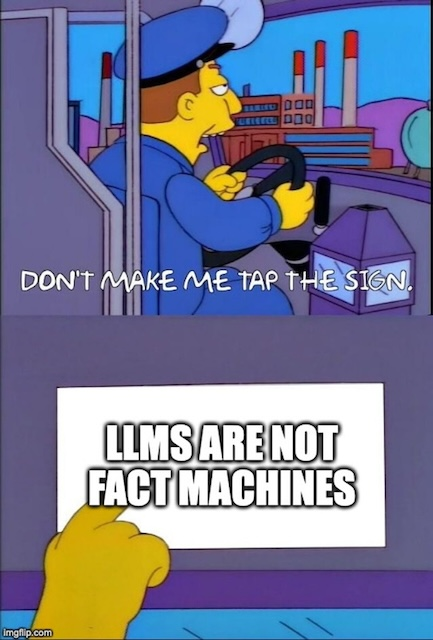

The following is based on a talk I gave at American University on Oct. 25, 2024.
Since this is about Artificial Intelligence and Large Language Models, let me offer this initial baseline:
I need to emphasize this not just as a journalism educator but as a participant in our shared civic life. There are many, many examples of people using LLMs as reference tools, and even some products that explicitly pitch LLMs as facts-as-a-service platforms. Even with the best of intentions and all kinds of guardrails, this is risky business. That’s because fundamentally, what most LLMs do is pretty simple: they predict the next word. That’s a bit of an oversimplification, but the reality is that probabilistic prediction is a huge part of how the “generative” part of generative AI works.
Don’t get me wrong, this isn’t a pitch to avoid using LLMs for journalistic tasks. I teach a whole class experimenting with AI for journalism and I’m convinced that there are a number of very good use cases for applying this technology to the kind of work reporters and editors do. Instead, this is a pitch to look beyond generative AI for its own sake and towards a journalism problem that LLMs could actually help address.
News organizations are sitting on a trove of valuable raw materials: the words, images, audio and video that they produce every day. That’s a huge asset, but mostly those organization treat them as an afterthought. Those materials are locked away in proprietary platforms where the most advanced access is a search button, and maybe the ability to sort the results by date. Search is great, but it’s much less useful if you treat the contents as single things, which in the case of most news organizations means a blob of text. Control-F was state of the art in the previous century, and searching for information is a baseline skill at this point, not a specialty.
“The world has become so complicated, the growth of available information so explosive, that the journalist needs to be a filter as well as a transmitter, an organizer and interpreter as well as one who gathers and delivers facts.” Phil Meyer wrote that in 1973. Think about what has changed about information since that time, and how most news organizations have failed to respond. Most news website search engines are, at best, marginally useful. Others have their best information locked away in inaccessible formats. Can you think of any other industry that treats its crucial materials so carelessly? Can you imagine it succeeding?
There’s so much that news organizations can and should be doing with their own archives that it can seem an insurmountable challenge. How can we begin to solve a problem that ranges from stitching together pieces of stories scattered across the pages of image PDFs to turning those stories into useful products that would help people better understand the places they live and the institutions that impact their lives?
One place to start is to make the materials we have - the stories, images, audio and video - better and more useful for journalists. Set aside for the moment the idea of handing AI over to consumers, since there’s already a lot of competition there, and it’s not clear that news consumers actually want that. I’d like to make the case for internal improvements via LLMs, starting with what I call structured data interviews.
That’s where journalists can make our archives more useful not by having AI generate a summary but by extracting important information from those blobs of text we have. There are plenty of possibilities here, but let me illustrate one of them. Nearly a decade ago, I worked on a story about maiden names for The New York Times along with Claire Cain Miller. Our question was whether we could find any evidence that women were keeping their names when marrying. There was some survey data on this, and some academic research using college alumni directories, but not a lot of data. I suggested that we use the wedding announcement published by The Times, knowing that those listings were not nearly representative of the American public, not just because they were at hand, but because they had a consistent format. Here’s one from 1985 where the bride kept her name:
Here’s part of another, from 2014:

Notice how similarly the two are in format, and that’s important. Nine years ago, I was able to parse these by writing some truly terrible Ruby code and then going through and checking almost all of the results. We limited the data we used to only selected years because I didn’t have enough time to do a larger set. If I were doing this story today, I would use an LLM to extract the information I needed, and I could have done many, many more announcements. Here’s a very simple example using that 2014 announcement: I asked ChatGPT to produce a CSV file with some basic information about the wedding extracted from the text, and I didn’t bother giving it an example. It did the job very well, and without hallucinations. When we actually provide the text for an LLM to work on and specific instructions, many of them produce very good results.
You might be tempted to think that this is not much more than a parlor trick, but the implications are real and significant. Imagine if The Times had the detailed personal information contained in these announcements as data, searchable in different ways. Think of the connections it might be able to make faster, or the story ideas that would be possible that simply aren’t now. What if every newsroom that collected and published information like this, maybe about schools or businesses or sports, had that ability? Mostly, they do now, thanks to LLMs.
Extractive AI, as you might call it, has the potential to not just unlock things that news organizations “know” but can’t recall, but to make possible stories that otherwise would require months of time and technical skill to accomplish. And it would help news organizations take advantage of a huge, nearly unmatched resource: their own knowledge of the communities and institutions they cover. At a time when local news organizations have shed most of their institutional knowledge and often struggle to retain talented employees for more than a year or two, imagine what it could mean not just to retain that community expertise but be able to build upon it. Imagine what it could mean to be able to look at major topics informed not just by history but by the knowledge of the habits and patterns that make up hundreds or thousands of decisions and choices, both individual and collective. Imagine news organizations being able to hand a newly-minted reporter a guide to the topics she’ll cover, informed by their own coverage habits but with the ability to respond to questions.
None of these will come to fruition by simply applying AI, of course. We need journalists who can serve as information scientists, testing out processes and evaluating the results. We need journalists comfortable enough with what they know about how LLMs work to make good choices when using them. And we need editors and publishers willing to see not just the newest fad but the persistent value in the information that their reporters and editors collect and publish. We need to value our archives and the people who make use of them.
The good news is that, as a technical matter, much of the path is now clear. There are good, stable solutions to the problems of turning images into text and extracting meaning from that text. There are open source LLMs that are edging closer to what the commercial models can do, making it possible to avoid being locked into a particular platform or vendor. There are people and institutions willing and able to experiment. This mostly isn’t a technical problem anymore. It’s a human problem, and while AI provides assistance, it requires human guidance to understand our shared history.
While I was preparing for the talk at American, I was listening to an audiobook called “The Barn” by Wright Thompson. It’s a history of the killing of Emmett Till in the Mississippi Delta in August 1955 that focuses on the barn where Till was tortured and murdered. That barn mostly had been written out of the “official history” of the tragedy, and the actual details of the crime are widely misunderstood or unknown, even by most residents of the Delta. The true story was hidden by the killers and, in particular, a journalist who wrote a 1956 Look magazine article about the murder. We now know the truth because people wrote things down and preserved them, and because others went looking. The memo that proved the lie about Till’s murder now sits in a university archive.
Archives are at once old and new. They are old because they are the resting place of facts and stories and ideas that only age. New because we can use them to learn more about who we are and how we got here. What people and ideas and truths we’ve clung to. How we might do better.